Wind Chime Valley · Art Delivery · 交付方 WorkBuddy 智能设计助手 → 接收方 Xiaomi MiMo Desktop
2026-09-22 · Godot 4.2+ · 全部 PNG 透明底 · 无图内文字
docs/art/美术需求清单.md 全量生产。运行时资产 588 张，覆盖需求清单 15 个章节全部类别；
数据层 id 映射 441/441 全覆盖，零缺口（含主角与 8 位 NPC 的四向行走帧）。game/art/keys/ 三张锚点：绘本水粉 + 吉卜力式软光，
主色板 草绿 #8FB56F · 纸奶油 #F3EAD3 · 木褐 #6B5340 · 铃金 #E8C87A。
| 目录 | 类别 | 张数 | 体积 | 内容 |
|---|---|---|---|---|
| chars/walk/ | 角色行走帧 | 144 | 8.7 MB | 主角 16 + NPC 8×16，四向 × 4 帧，192×288 脚底对齐，已接入帧动画 |
| items/ | 物品图标 | 156 | 22.1 MB | 料理 40 · 种子 48 · 鱼 24 · 古物 12 · 工具资源 32 |
| crops/ | 作物 | 96 | 4.3 MB | 48 种成熟图 + 12 种生长阶段 _s0..s3 |
| tiles/ | 地块与植被 | 41 | 30.7 MB | 生态地皮 10 · 树木四季×三类 12 · 花 6 色 · 装饰道具 12 · 宝箱 1 |
| ui/ | UI | 36 | 17.6 MB | 面板 / 按钮 / 图标集 / 天气 7 / 季节 4 / 技能 6 / 提示 7 / Logo |
| furniture/ | 家具 | 32 | 3.6 MB | 32 件（含 4 幅风景画） |
| enemies/ | 敌人 | 26 | 4.8 MB | 动画帧 18（4 组）· 矿岩 4 皮 · 合成图 3 · 待机 1 |
| fx/ | 特效与天气 | 14 | 4.5 MB | 天气遮罩 4 · 粒子 2 · 特效 8 |
| buildings/ | 建筑 | 14 | 31.2 MB | 风铃塔 / 木屋 / 杂货摊 / 博物馆 / 矿洞入口 / 风车 等 14 |
| chars/ | 角色 | 11 | 17.6 MB | NPC 立绘 9 · 主角参考图 2 |
| animals/ | 动物 | 6 | 0.6 MB | 鸡 / 牛 / 羊 / 鸭 / 山羊 / 蜂箱 |
| cutscenes/ | 过场插画 | 5 | 12.8 MB | 5 章主线 |
| marketing/ | 营销素材 | 7 | 7.6 MB | 主胶囊 / 库图 / Splash / 海报 4 |
| keys/ | 风格锚点 | 9 | 24.0 MB | 生成时的对齐基准（非运行时） |
| 需求项 | 完成 | 比例 | |
|---|---|---|---|
| 作物成熟图 | 48 / 48 | 100% | |
| 作物生长阶段 | 12 / 48 | 25% | |
| 种子图标 | 48 / 48 | 100% | |
| 料理图标 | 40 / 40 | 100% | |
| 鱼类图标 | 24 / 24 | 100% | |
| 古物图标 | 12 / 12 | 100% | |
| NPC 立绘 | 8 / 8 | 100% | |
| 家具 | 30 / 30 | 100% | |
| 工具 / 资源 / 任务图标 | 18 / 18 | 100% | |
| 矿岩 | 7 / 7 | 100% | |
| 敌人动画帧 | 14 / 14 | 100% | |
| 主角行走帧 | 16 / 16 | 100% | |
| NPC 行走帧 | 128 / 128 | 100% |
全部以棋盘格衬底渲染，可直观查看透明底抠图质量。
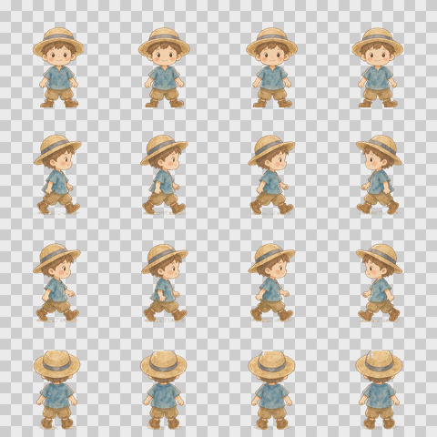
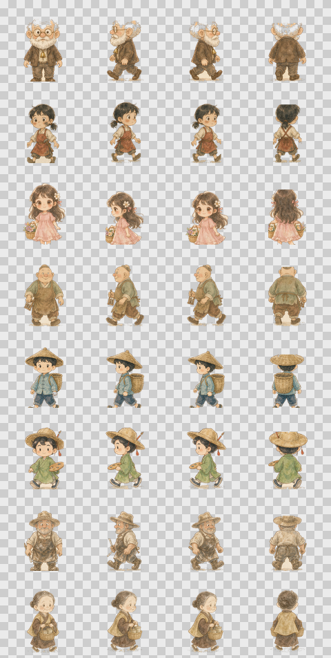
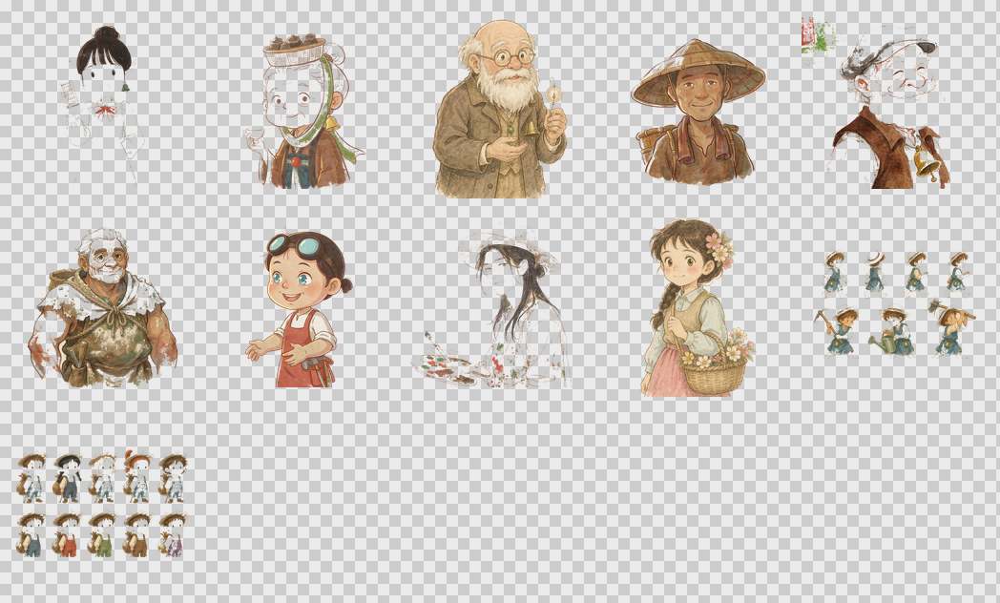
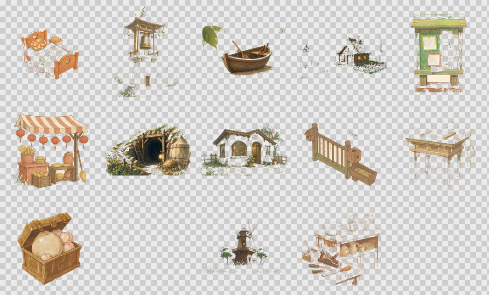
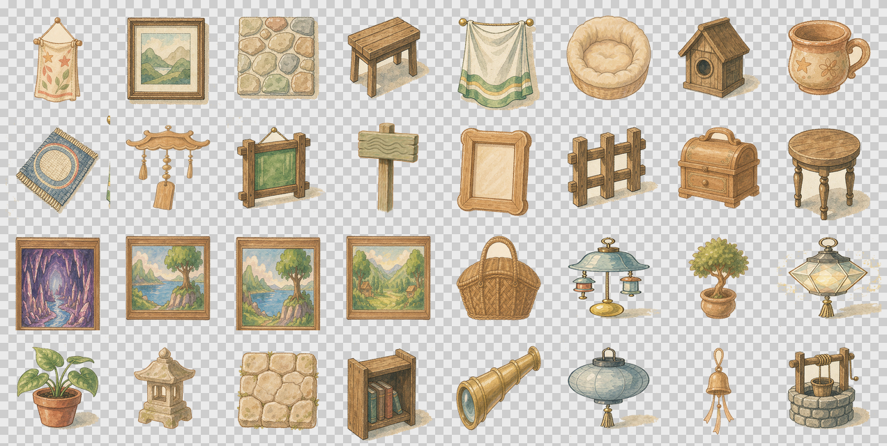
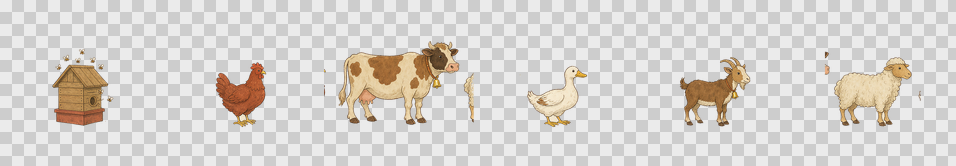
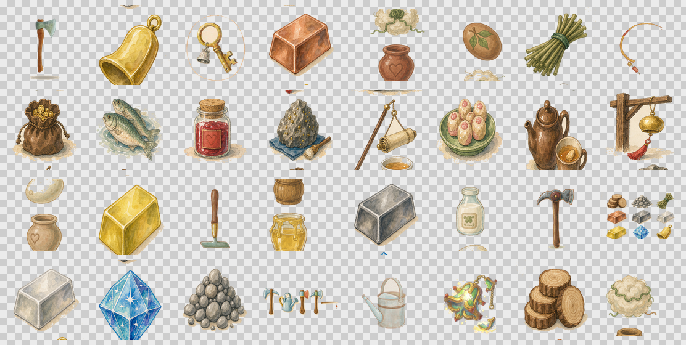
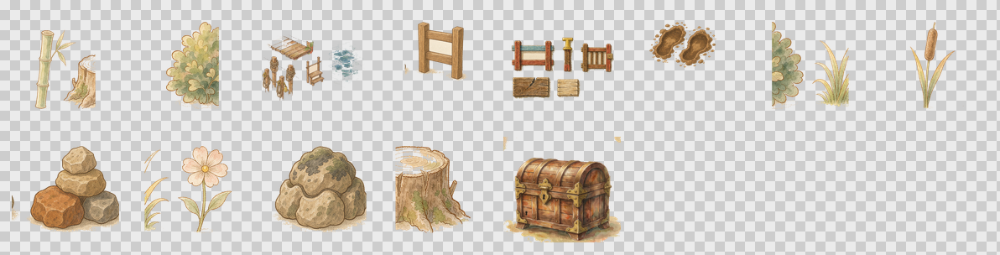
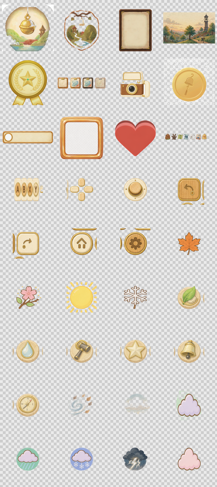
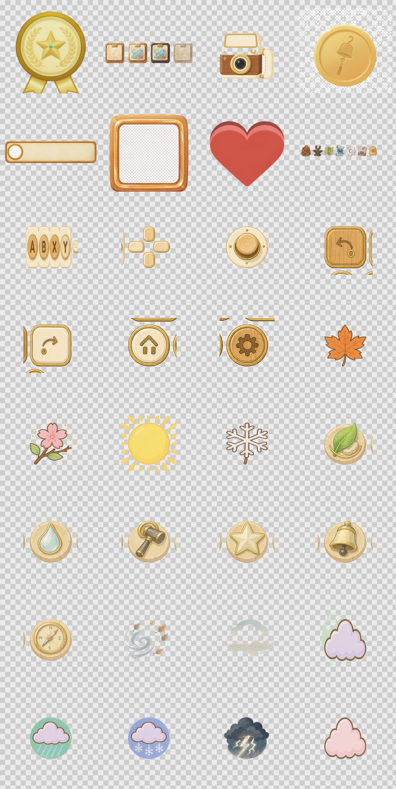
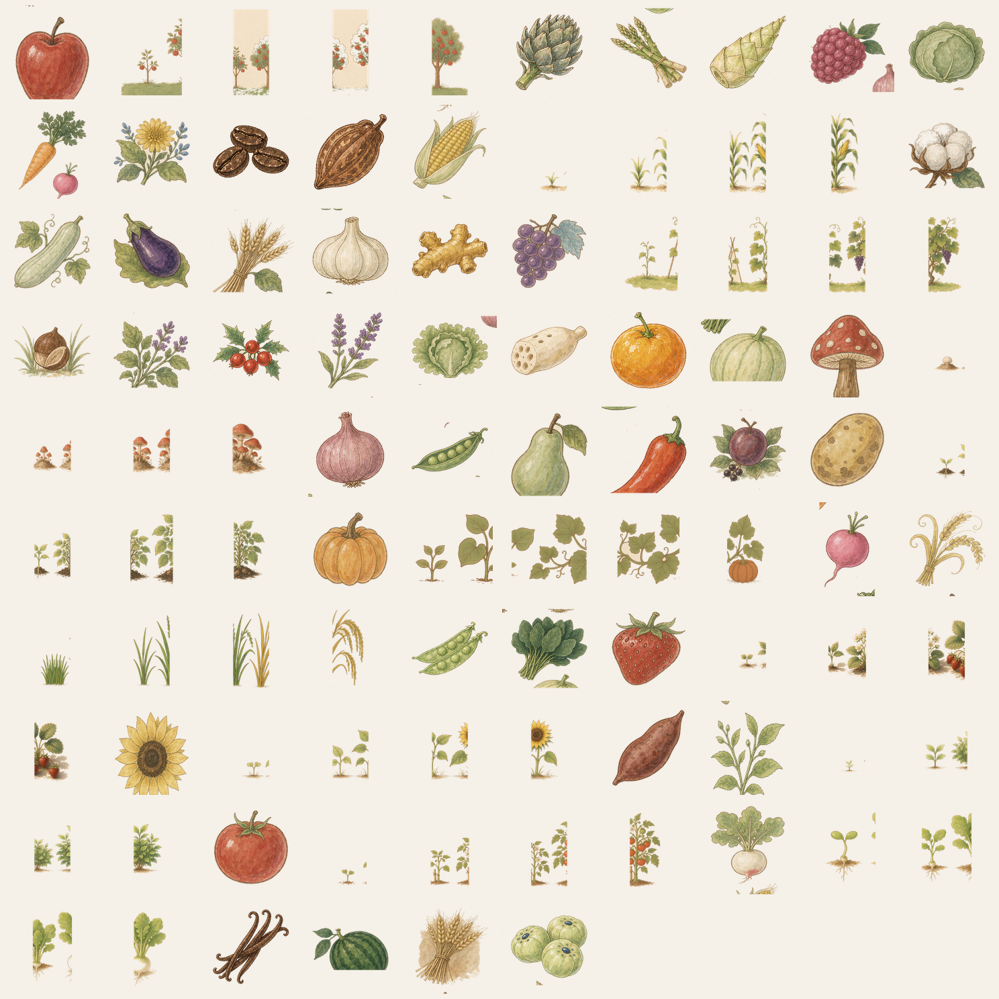
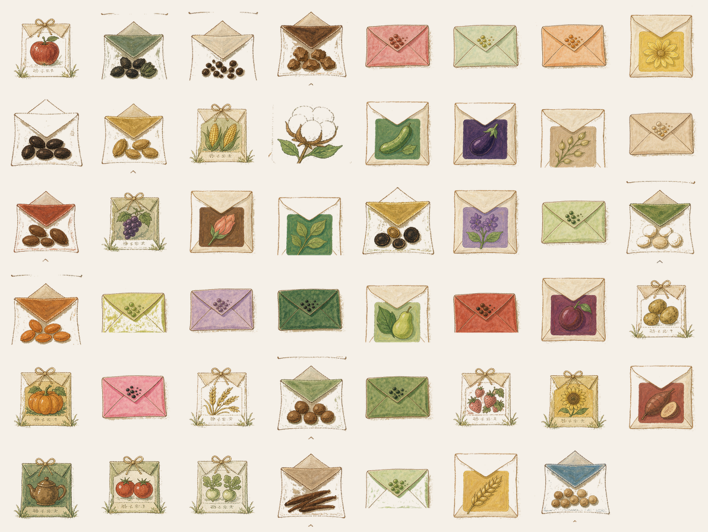
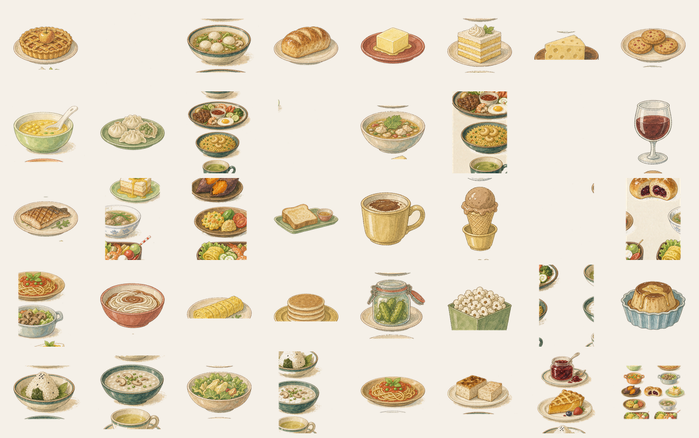
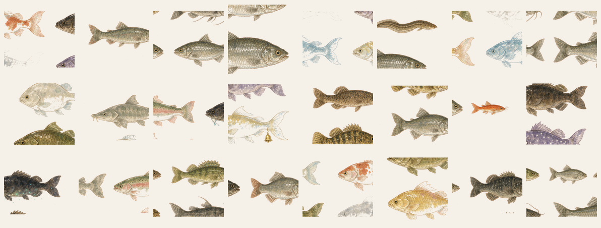
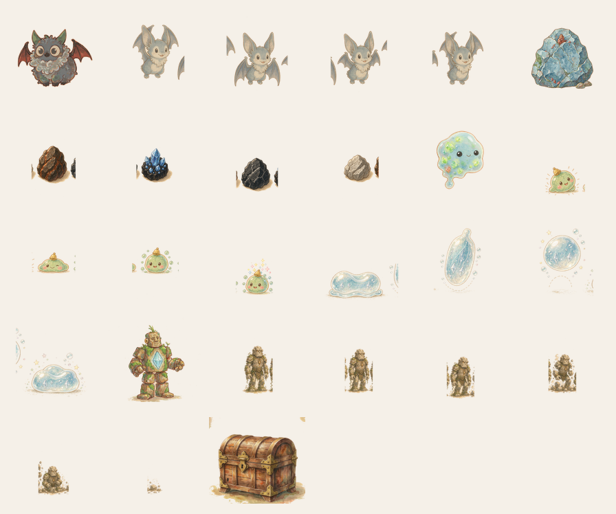
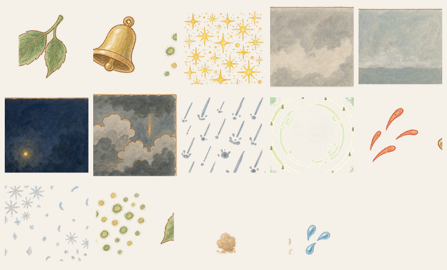
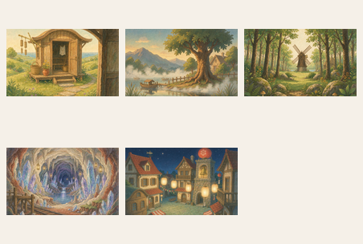
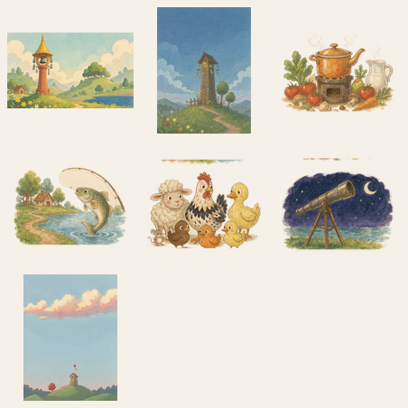
docs/art/art_id_map.json（附 CSV 版）覆盖全部 441 条映射：
crops 48 · crop_stage 48 · seed 48 · dish 40 ·
furniture 30 · fish 24 · item_icon 18 · enemy_frame 14 ·
antique 12 · npc 8 · ore_rock 7 ·
player_walk 16 · npc_walk 128。
docs/art/ART_PIPELINE_V2.md。fx_overlay_*
必须单独开启线性过滤，否则出现块状。
| 项 | 建议 |
|---|---|
| game/art/_stage/ | 拼板源图，运行时不需要，删除可减小包体；保留请移出 game/ |
| game/art/keys/ | 风格锚点，运行时不加载，建议保留在仓库但排除出导出包 |
| game/art/sprites/ | 灰盒占位，已被正式资源取代，可后续移除 |
| *.import | 现仅 12 个。首次用 Godot 打开工程会自动补齐全部 588 张，请留足导入时间 |